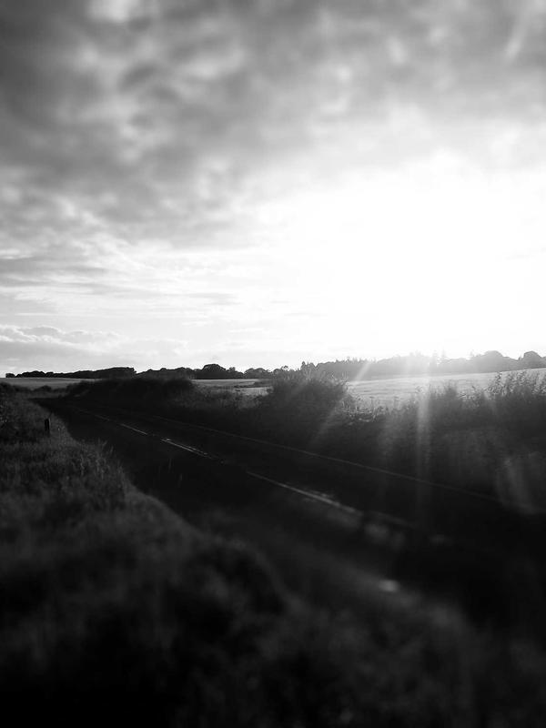

01
Slow lookingI spend more time watching than shooting. The camera only appears once I understand the rhythm of a place — the light at a certain hour, the pattern of movement, the small rituals that repeat.
The Photographer

Photographer
Documentary & Fine Art Photography
I am a documentary and fine art photographer based in New York, working at the intersection of light, memory, and human presence. My work has been exhibited across galleries in Europe, Asia, and the Americas, and published in National Geographic, TIME, and Aperture.
I believe every photograph is a negotiation between the seen and the felt. I work in long expeditions — months, sometimes years — building the trust that allows a subject to forget the camera exists. That is the only moment worth capturing.
I am currently based between New York and Chiang Mai, and available for editorial assignments, fine art commissions, and commercial projects that align with this way of working.
Approach
01
Slow lookingI spend more time watching than shooting. The camera only appears once I understand the rhythm of a place — the light at a certain hour, the pattern of movement, the small rituals that repeat.
02
Analogue foundationAll personal work is shot on medium-format film. The constraint of twelve frames per roll changes how I see. The cost of each frame sharpens attention in a way no digital workflow replicates.
03
Minimal processingI develop my own film and make my own prints. The image is complete in-camera. Post-processing corrects technical failure; it does not build the photograph. I prefer the restraint of the darkroom to the infinite latitude of the screen.
Years active
Projects
Countries
Exhibitions